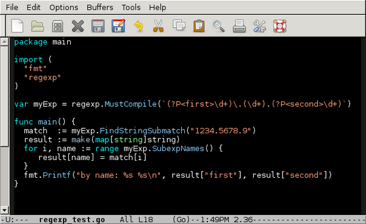

12.24.2013 16:30
Hello go (golang)
I've been sick for 10 days and am going totally stir crazy. I figured
it was time to finally get over the initial kickstart of using go.
Till now, I've always left the direct use of go to my collaborator
Francesc. I've read his code and it performs nicely. So it's time for me
to try out go in my own way. Thanks to Brendan, there was an initial
fink go package for version 1.1.1. However, this didn't work for me on
Mac OSX 10.9. I tried fixing it, and bumped into the oddities of the go
src package. Some go authors refer to this as the go way. I consider this
just having a weak source setup process and no install method. Once it was
clear that go is just like python with the system checking the timestamps
against the compiled libraries (.go -> .a for go; .py -> .pyc for python),
I was able to build a go 1.2 package that even includes bash command line
completion (which still acts a bit strangely) and the emacs go mode. So
being that I'm a fink maintainer, let's start there.
fink install go
echo "(require 'go-mode-load)" >> ~/.emacs
type go # /sw/bin/go
go version
# go version go1.2 darwin/amd64
go help # Lots of command options on the screen
cd
mkdir -p go/src/hello # Violate the go tree layout for now cause we don't need it yet.
cd go/src/hello
cat > hello.go << EOF
package main
import "fmt"
func main() {
fmt.Printf("Hello, world.\n")
}
EOF
go run hello.go
# Hello, world.
go build hello
can't load package: package hello: cannot find package "hello" in any of:
/sw/lib/go/src/pkg/hello (from $GOROOT)
($GOPATH not set)
So that was not really the right way to setup your go projects, but it
was easy enough to get a kickstart. How about something a little more
interesting? I like regular expressions (regexp) and want to see how
it would be to write a NMEA parser in go. I got stuck right off, but
I got help over on stack overflow: Using
named matches from Go regex. I really prefer to use named fields
for regular expressions. It's slower, but the regular expressions are much more
understandable.
mkdir ~/go/src/regexp cd !:1 # !:1 says use the argument at position 1 in the prior shell command emacs demo_regexp.goThen put this code into emacs:
package main import ( "fmt" "regexp" ) var myExp = regexp.MustCompile(`(?P\d+)\.(\d+).(?P \d+)`) func main() { match := myExp.FindStringSubmatch("1234.5678.9") result := make(map[string]string) for i, name := range myExp.SubexpNames() { result[name] = match[i] } fmt.Printf("by name: %s %s\n", result["first"], result["second"]) }

go run demo_regexp.go # by name: 1234 9Now to change it up, I wanted to try go via Google App Engine (GAE). Google App Engine in Go. The download is a little bit confusing. I expected an installer or something. What I found was a zip that you have to unpack and put in your path. I guess I should make a fink package in my personal package tree for that, but some other day.
fink install wget unzip
wget http://googleappengine.googlecode.com/files/go_appengine_sdk_darwin_amd64-1.8.8.zip
unzip go_appengine_sdk_darwin_amd64-1.8.8.zip
cd go_appengine
export PATH=`pwd`:$PATH
mkdir -p ~/go/myapp/hello
cd ~/go/myapp/hello
cat << EOF > hello.go
package hello
import (
"fmt"
"net/http"
)
func init() {
http.HandleFunc("/", handler)
}
func handler(w http.ResponseWriter, r *http.Request) {
fmt.Fprint(w, "Hello, world!")
}
EOF
cd ~/go
goapp serve myapp &
open http://localhost:8080
I know I do things differently than the average person, I'm not on the Go team, and this is definitely not a sanctioned tutorial, but it's how I got started. I have tons more to do.
12.13.2013 17:58
Gebco multibeam cookbook
I was talking to people at AGU about common issues in multibeam sonar
data. I made a comment that there is not great documentation out
there that goes through the common issues seen in multibeam covering
what the issues look like, what causes them, can they be prevented,
and can they be fixed after the fact? Someone (perhaps Dave Sandwell)
asked if I had seen the Gebco Cookbook. I hadn't.
6.2.4 Common multibeam swath sonar errors Spikes under nadir Tracking water-column noise Roll-over on inward-facing steep slopes Anomalies on outward-facing slopes Navigation missing on first ping Inaccurate sound speed profile usedHere is one of those:
Tracking water-column noise Modern multibeam swath sonar systems generally include automated bottom tracking algorithms. Such algorithms search for seafloor echoes in a window centered on the previous (or adjacent) ping’s depths. However, the system can begin to track water column noise, and may continue to do so if the system is not actively monitored. Depth variability between pings can be large, the across-track depth profiles are not consistent with seafloor topography, and most of the beams/pings should be discarded.There aren't any images and the text is pretty short. So now I've seen it, but it seems pretty weak. This stuff is definitely a start, but it's so far from what I'd like to see in the end. And the work is copyrighted in a way that I'm not going to contribute to it: "© Copyright International Hydrographic Organization [2012] " It would be nice if were at least some sort of open documentation license.